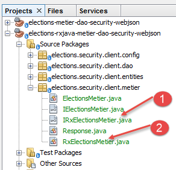
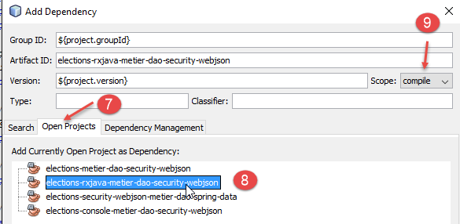
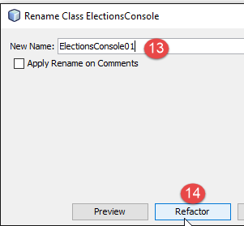

20. البرمجة غير المتزامنة باستخدام RxJava
قراءات موصى بها: [مقدمة إلى RxJava. التطبيق في بيئات Swing وAndroid.]
في هذا الفصل، نعود إلى الفصل 17.6، حيث قمنا بإنشاء تطبيق عميل/خادم بالبنية التالية:
 |
تؤدي بعض إجراءات المستخدم على واجهة Swing في [1] إلى تشغيل إجراءات تمتد حتى قاعدة البيانات في [3] عبر شبكة HTTP [2]. ونتيجة لذلك، قد يستغرق وصول الاستجابة لإجراء المستخدم وقتًا أطول أو أقصر. ومن المفيد تضمين مؤشر تحميل على واجهة المستخدم مع خيار لإلغاء العملية التي تم بدءها إذا استغرقت وقتًا طويلاً. في الفصل 17.6، تكون كل إجراءات المستخدم التي تتطلب تبادل البيانات مع الخادم متزامنة. لا يكتمل معالج الأحداث الذي ينفذه الكود حتى يتم استلام الاستجابة. خلال هذه الفترة، تتجمد الواجهة الرسومية: فهي لا تستجيب لإجراءات المستخدم الجديدة. يتم ببساطة وضع هذه الإجراءات في قائمة انتظار ليتم معالجتها بمجرد انتهاء معالج الأحداث قيد التشغيل حاليًا. وبالتالي، إذا تم عرض زر إلغاء، يمكن للمستخدم النقر عليه، ولكن لن يحدث شيء حتى تنتهي العملية الحالية. عندئذٍ لن يكون لزر الإلغاء أي فائدة.
لكي يصبح النقر على زر الإلغاء ساري المفعول، يجب إكمال العملية الحالية. لتحقيق ذلك، يجب تشغيل العملية التي قد تستغرق وقتًا طويلاً بشكل غير متزامن:
- يبدأ معالج الأحداث العملية التي قد تستغرق وقتًا طويلاً ولكنه لا ينتظر نتيجتها ويعيد التحكم إلى مؤشر ترابط واجهة المستخدم الذي يتعامل مع أحداث واجهة المستخدم الرسومية. يتم تشغيل العملية التي قد تستغرق وقتًا طويلاً على مؤشر ترابط مختلف عن مؤشر ترابط واجهة المستخدم، مما يمنع حظر هذا الأخير؛
- إذا نقر المستخدم على زر الإلغاء قبل اكتمال العملية التي تستغرق وقتًا طويلاً، يمكن لسلسلة أحداث واجهة المستخدم الخاملة معالجة هذا الحدث. يمكن بعد ذلك التخلي عن العملية التي تستغرق وقتًا طويلاً عن طريق تجاهل نتيجتها؛
- إذا لم يتم إلغاء العملية طويلة الأمد، فسيؤدي وصول الاستجابة إلى تشغيل حدث في مؤشر ترابط واجهة المستخدم. إذا كان مؤشر ترابط واجهة المستخدم خاملاً، فسيقوم بتنفيذ الكود المرتبط بهذا الحدث، والذي سيقوم بمعالجة الاستجابة؛
ستعمل واجهة المستخدم كما في السابق. إذا كانت أوقات استجابة الخادم سريعة، فلن يلاحظ المستخدم أي فرق. إذا كانت ملحوظة، فسيظهر للمستخدم زر إلغاء وسيكون لديه خيار مقاطعة العملية الحالية.
تتيح مكتبة [Rx] البرمجة غير المتزامنة. وتكمن ميزتها الرئيسية في حقيقة أنها تم نقلها إلى العديد من البيئات (Java، .NET، JS، إلخ) وأن إتقانها في بيئة ما يمكن نقله بسهولة إلى بيئة أخرى. هنا، سنشير إلى الفصل 2 من الوثيقة [مقدمة إلى RxJava. التطبيق على بيئات Swing و Android]. ونشجع القارئ على قراءته. في الأقسام التالية، سنستخدم كودًا من الأمثلة الواردة في هذا الفصل.
سنطور بنية التطبيق على النحو التالي:
 |
- في [1]، نقوم بإدراج طبقة [RxJava] بين طبقة [Swing] وطبقة [منطق الأعمال]. وسيتم الآن استدعاء الطرق الموجودة في الطبقة الأخيرة بشكل غير متزامن؛
سنمضي قدماً في عدة خطوات:
- الخطوة 1: تقدم طبقة [منطق الأعمال، DAO] حاليًا واجهة متزامنة لطبقة [UI]. سنحولها إلى طبقة غير متزامنة [RxJava، منطق الأعمال، DAO]؛
- الخطوة 2: سنقوم بتحويل تطبيق وحدة التحكم المتزامن إلى تطبيق يظل متزامنًا ولكنه يستخدم واجهة غير متزامنة [RxJava، الأعمال، DAO]؛
- الخطوة 3: سنقوم بتحويل تطبيق Swing المتزامن إلى تطبيق Swing غير متزامن؛
20.1. الخطوة 1
نقوم بتحويل الطبقة المتزامنة الحالية [منطق الأعمال، DAO] إلى طبقة غير متزامنة [RxJava، منطق الأعمال، DAO].
20.1.1. الإنشاء
نبدأ بمشروع Maven من الفصل 17.4، الذي نفتحه في NetBeans:
 |  |
نقوم بنسخ هذا المشروع [1] (نسخ/لصق) إلى مشروع جديد [elections-rxjava-business-dao-security-webjson] [2].
20.1.2. تكوين Maven
نقوم بتحديث ملف [pom.xml] للمشروع الجديد لإضافة التبعية لمكتبة [RxJava]:
<project xmlns="http://maven.apache.org/POM/4.0.0" xmlns:xsi="http://www.w3.org/2001/XMLSchema-instance"
xsi:schemaLocation="http://maven.apache.org/POM/4.0.0 http://maven.apache.org/xsd/maven-4.0.0.xsd">
<modelVersion>4.0.0</modelVersion>
<groupId>istia.st.elections</groupId>
<artifactId>elections-metier-dao-security-rxjava-webjson</artifactId>
<version>0.0.1-SNAPSHOT</version>
<description>Client jUnit du serveur web / jSON</description>
<name>elections-metier-dao-security-rxjava-webjson</name>
<properties>
<project.build.sourceEncoding>UTF-8</project.build.sourceEncoding>
<java.version>1.8</java.version>
</properties>
<parent>
<groupId>org.springframework.boot</groupId>
<artifactId>spring-boot-starter-parent</artifactId>
<version>1.2.7.RELEASE</version>
</parent>
<dependencies>
<!-- Spring -->
<dependency>
<groupId>org.springframework</groupId>
<artifactId>spring-web</artifactId>
</dependency>
<!-- jSON library used by Spring -->
<dependency>
<groupId>com.fasterxml.jackson.core</groupId>
<artifactId>jackson-core</artifactId>
</dependency>
<dependency>
<groupId>com.fasterxml.jackson.core</groupId>
<artifactId>jackson-databind</artifactId>
</dependency>
<!-- component used by Spring RestTemplate -->
<dependency>
<groupId>org.apache.httpcomponents</groupId>
<artifactId>httpclient</artifactId>
</dependency>
<!-- Google Guava -->
<dependency>
<groupId>com.google.guava</groupId>
<artifactId>guava</artifactId>
<version>16.0.1</version>
<scope>test</scope>
</dependency>
<!-- log library -->
<dependency>
<groupId>org.springframework.boot</groupId>
<artifactId>spring-boot-starter-logging</artifactId>
</dependency>
<!-- Spring Boot Test -->
<dependency>
<groupId>org.springframework.boot</groupId>
<artifactId>spring-boot-starter-test</artifactId>
<scope>test</scope>
</dependency>
<!-- Spring Boot -->
<dependency>
<groupId>org.springframework.boot</groupId>
<artifactId>spring-boot</artifactId>
<scope>test</scope>
</dependency>
<!-- https://mvnrepository.com/artifact/io.reactivex/rxjava -->
<dependency>
<groupId>io.reactivex</groupId>
<artifactId>rxjava</artifactId>
<version>1.2.0</version>
</dependency>
</dependencies>
<build>
<plugins>
<plugin>
<groupId>org.apache.maven.plugins</groupId>
<artifactId>maven-surefire-plugin</artifactId>
<version>2.18.1</version>
</plugin>
</plugins>
</build>
</project>
- الأسطر 65–70: أضفنا التبعية لمكتبة RxJava؛
20.1.3. التنفيذ غير المتزامن لطبقة [الأعمال]
 |
لتنفيذ طبقة [RxJava، الأعمال]، نضيف واجهة غير متزامنة [IRxElectionsMetier] [1] وتنفيذها [RxElectionsMetier] [2] إلى المشروع:
 |
واجهة [IRxElectionsMetier] هي الواجهة غير المتزامنة لطبقة [RxJava، الأعمال]. وفيما يلي شفرة البرمجة الخاصة بها:
package elections.security.client.metier;
import elections.security.client.entities.ListeElectorale;
import elections.security.client.entities.User;
import rx.Observable;
public interface IRxElectionsMetier {
// authentication
Observable<Void> authenticate(User user);
// get the lists in competition
Observable<ListeElectorale[]> getListesElectorales(User user);
// the number of seats to be filled
Observable<Integer> getNbSiegesAPourvoir(User user);
// the electoral threshold
Observable<Double> getSeuilElectoral(User user);
// recording results
Observable<Void> recordResultats(User user, ListeElectorale[] listesElectorales);
// calculating seats
Observable<ListeElectorale[]> calculerSieges(User user, ListeElectorale[] listesElectorales);
}
ترث واجهة [IRxElectionsMetier] الطرق من واجهة [IElectionsMetier]، ولكن في حين أن الطريقة M في واجهة [IElectionsMetier] تُرجع نتيجة من النوع T، فإن الطريقة M في واجهة [IRxElectionsMetier] تُرجع نتيجة من النوع Observable<T>. ويتم توفير النوع [Observable] بواسطة مكتبة RxJava. يوفر النوع Observable<T> الطريقة [subscribe]، التي تسترد النوع T بشكل غير متزامن. ترتبط ثلاثة أحداث بهذه الطريقة:
- onSuccess(T result)، التي تُعلم بأن نتيجة من النوع T متاحة. قد تُرجع العملية غير المتزامنة نتائج متعددة؛
- onError(Throwable th)، التي تُعلم بأن العملية غير المتزامنة واجهت خطأً؛
- onCompleted()، التي تُعلم بأن العملية غير المتزامنة قد اكتملت؛
حتى يتم استدعاء طريقة [Observable.subscribe]، لا تبدأ العملية غير المتزامنة المرتبطة بـ observable. لا يحصل الكود الذي يستدعي طريقة M من واجهة [IRxElectionsMetier] على النتيجة المتوقعة T، بل يحصل على نوع Observable<T> الذي سيسمح له لاحقًا بالحصول على النتيجة T عن طريق استدعاء طريقة [Observable.subscribe].
فيما يلي تنفيذ [RxElectionsMetier] لواجهة [IRxElectionsMetier]:
package elections.security.client.metier;
import elections.security.client.entities.ListeElectorale;
import elections.security.client.entities.User;
import org.springframework.beans.factory.annotation.Autowired;
import org.springframework.stereotype.Component;
import rx.Observable;
@Component
public class RxElectionsMetier implements IRxElectionsMetier {
@Autowired
private IElectionsMetier metier;
@Override
public Observable<Void> authenticate(User user) {
...
}
@Override
public Observable<ListeElectorale[]> getListesElectorales(User user) {
return Observable.create(subscriber -> {
try {
// call synchronous method then reply to subscriber
subscriber.onNext(metier.getListesElectorales(user));
// we signal the end of the observable
subscriber.onCompleted();
} catch (Exception e) {
// we forward the exception
subscriber.onError(e);
}
});
}
@Override
public Observable<Integer> getNbSiegesAPourvoir(User user) {
...
}
@Override
public Observable<Double> getSeuilElectoral(User user) {
...
}
@Override
public Observable<Void> recordResultats(User user, ListeElectorale[] listesElectorales) {
...
}
@Override
public Observable<ListeElectorale[]> calculerSieges(User user, ListeElectorale[] listesElectorales) {
...
}
}
- السطور 12-13: حقن Spring لطبقة الأعمال المتزامنة؛
- السطور 20-34: سنعلق على طريقة [getVoterLists]، التي بدلاً من إرجاع نوع [VoterList[]]، ترجع نوع [Observable<VoterList[]>]؛
- الأسطر 22-32: تسمح لك الطريقة الثابتة [Observable.create] بإنشاء Observable من نوع [Subscriber]. يمثل نوع [Subscriber] مشتركًا في تدفقات النتائج التي تنتجها العملية المراقبة (Observable). ويوفر ثلاث طرق:
- [Subscriber.onNext] (السطر 25) لتلقي نتيجة من العملية المراقبة؛
- [Subscriber.onError] (السطر 30) لتلقي استثناء من العملية المراقبة. بعد حدوث استثناء، لا يصدر النوع [Observable] نتائج بعد ذلك؛
- [Subscriber.onCompleted] (السطر 27) لتلقي إشارة نهاية الإصدار من العملية المراقبة. هنا، تصدر العملية المراقبة عنصرًا واحدًا فقط. لاحظ أن هذه الإشارة لا تصدر في حالة حدوث استثناء. هذا هو السلوك الافتراضي لـ Observables: إصدار استثناء يشير أيضًا إلى نهاية الإصدارات. المشتركون على دراية بذلك؛
- الأسطر 22–34: تأخذ طريقة [Observable.create] نوع [Observable.OnSubscribe] كمعلمة. هذا النوع هو واجهة وظيفية. تم تقديم هذا المفهوم مع Java 8 ويشير إلى واجهة ذات طريقة واحدة. هنا، الطريقة الوحيدة لواجهة [Observable.OnSubscribe] هي كما يلي:
لتنفيذ واجهة وظيفية ذات طريقة واحدة m(param1, param2, ..., paramn)، يمكنك استخدام الصيغة المبسطة التالية:
وهذا ما تم في الأسطر 22–34:
- [subscriber] هو معلمة طريقة [Observable.OnSubscribe.call]؛
- الأسطر 23–32: الكود الذي نريد توفيره لطريقة [call]؛
- السطر 25: نطلب قوائم الناخبين بشكل متزامن من طبقة [business] التي تم إدخالها في السطر 13. لذلك سيتعين علينا انتظار النتيجة. وعند استلامها، يتم تمريرها إلى طريقة [onNext] الخاصة بالمشترك؛
- السطر 28: في حالة حدوث خطأ، يتم تمرير الاستثناء إلى طريقة [onError] الخاصة بالمشترك؛
- السطر 31: ننتظر نتيجة واحدة. بمجرد الحصول عليها (سواء كانت قوائم الناخبين أو استثناء)، نُعلم المشترك بأن العملية المراقبة قد انتهت من إصدار النتائج؛
من المهم تذكر أن طريقة [RxElectionsMetier] تُرجع نوع Observable<VoterList[]> وليس النوع VoterList[] نفسه. يجب أن يستدعي الكود المستدعي الطريقة Observable<VoterList[]>.subscribe حتى يتم تنفيذ الكود في الأسطر 23–33 وإرجاع قوائم الناخبين عبر السطر 25.
الرمز الخاص بالطرق الأخرى مشابه:
package elections.security.client.metier;
import elections.security.client.entities.ListeElectorale;
import elections.security.client.entities.User;
import org.springframework.beans.factory.annotation.Autowired;
import org.springframework.stereotype.Component;
import rx.Observable;
@Component
public class RxElectionsMetier implements IRxElectionsMetier {
@Autowired
private IElectionsMetier metier;
@Override
public Observable<Void> authenticate(User user) {
return Observable.create(subscriber -> {
try {
// synchronous method call
metier.authenticate(user);
// we signal the end of the observable
subscriber.onCompleted();
} catch (Exception e) {
// we forward the exception
subscriber.onError(e);
}
});
}
@Override
public Observable<ListeElectorale[]> getListesElectorales(User user) {
return Observable.create(subscriber -> {
try {
// call synchronous method then reply to subscriber
subscriber.onNext(metier.getListesElectorales(user));
// we signal the end of the observable
subscriber.onCompleted();
} catch (Exception e) {
// we forward the exception
subscriber.onError(e);
}
});
}
@Override
public Observable<Integer> getNbSiegesAPourvoir(User user) {
return Observable.create(subscriber -> {
try {
// call synchronous method then reply to subscriber
subscriber.onNext(metier.getNbSiegesAPourvoir(user));
// we signal the end of the observable
subscriber.onCompleted();
} catch (Exception e) {
// we forward the exception
subscriber.onError(e);
}
});
}
@Override
public Observable<Double> getSeuilElectoral(User user) {
return Observable.create(subscriber -> {
try {
// call synchronous method then reply to subscriber
subscriber.onNext(metier.getSeuilElectoral(user));
// we signal the end of the observable
subscriber.onCompleted();
} catch (Exception e) {
// we forward the exception
subscriber.onError(e);
}
});
}
@Override
public Observable<Void> recordResultats(User user, ListeElectorale[] listesElectorales) {
return Observable.create(subscriber -> {
try {
// synchronous method call
metier.recordResultats(user, listesElectorales);
// we signal the end of the observable
subscriber.onCompleted();
} catch (Exception e) {
// we forward the exception
subscriber.onError(e);
}
});
}
@Override
public Observable<ListeElectorale[]> calculerSieges(User user, ListeElectorale[] listesElectorales) {
return Observable.create(subscriber -> {
try {
// call synchronous method then reply to subscriber
subscriber.onNext(metier.calculerSieges(user, listesElectorales));
// we signal the end of the observable
subscriber.onCompleted();
} catch (Exception e) {
// we forward the exception
subscriber.onError(e);
}
});
}
}
- السطران 20 و 81: لا يتم استدعاء طريقة [onNext] للمشترك لأن المشترك لا يتوقع أي نتائج؛
20.1.4. اختبارات JUnit لطبقة [business]
 |
20.1.4.1. الاختبار 01
نعود إلى اختبار الوحدة [Test01] الذي تمت مناقشته في القسم 17.4.4. وقد تم تصميمه لإجراء مكالمات متزامنة إلى واجهة [IElectionsMetier]. نقوم بتعديله بحيث يقوم بإجراء مكالمات متزامنة إلى واجهة [IRxElectionsMetier] الجديدة. ومن الممكن بالفعل إجراء مكالمات متزامنة إلى واجهة RxJava غير متزامنة. يصبح الكود كما يلي:
package elections.security.client.metier.junit;
import org.junit.Assert;
import org.junit.BeforeClass;
import org.junit.Test;
import org.junit.runner.RunWith;
import org.springframework.beans.factory.annotation.Autowired;
import org.springframework.boot.test.SpringApplicationConfiguration;
import org.springframework.test.context.junit4.SpringJUnit4ClassRunner;
import com.fasterxml.jackson.core.JsonProcessingException;
import com.fasterxml.jackson.databind.ObjectMapper;
import elections.security.client.config.MetierConfig;
import elections.security.client.entities.ElectionsException;
import elections.security.client.entities.ListeElectorale;
import elections.security.client.entities.User;
import elections.security.client.metier.IRxElectionsMetier;
import rx.observables.BlockingObservable;
@SpringApplicationConfiguration(classes = MetierConfig.class)
@RunWith(SpringJUnit4ClassRunner.class)
public class Test01 {
// layer [electionsMetier]
@Autowired
private IRxElectionsMetier electionsMetier;
// mapper jSON
private final ObjectMapper mapper = new ObjectMapper();
// users
static private User admin;
static private User user;
static private User unknown;
@BeforeClass
public static void initTest() {
admin = new User("admin", "admin");
user = new User("user", "user");
unknown = new User("x", "y");
}
@Test()
public void checkUserUser() {
ElectionsException se = null;
try {
BlockingObservable.from(electionsMetier.authenticate(user)).firstOrDefault(null);
} catch (ElectionsException e) {
se = e;
}
Assert.assertNotNull(se);
Assert.assertEquals("403 Forbidden", se.getErreurs().get(0));
}
@Test()
public void checkUserUnknown() {
ElectionsException se = null;
try {
BlockingObservable.from(electionsMetier.authenticate(unknown)).firstOrDefault(null);
} catch (ElectionsException e) {
se = e;
}
Assert.assertNotNull(se);
Assert.assertEquals("401 Unauthorized", se.getErreurs().get(0));
}
@Test()
public void checkUserAdmin() {
ElectionsException se = null;
try {
BlockingObservable.from(electionsMetier.authenticate(admin)).firstOrDefault(null);
} catch (ElectionsException e) {
se = e;
}
Assert.assertNull(se);
}
/**
* vérification 1 : méthode de calcul des sièges on fixe en dur les listes
*/
@Test
public void calculSieges1() {
// create the table of 7 candidate lists
ListeElectorale[] listes = new ListeElectorale[7];
listes[0] = new ListeElectorale("A", 32000, 0, false);
listes[1] = new ListeElectorale("B", 25000, 0, false);
listes[2] = new ListeElectorale("C", 16000, 0, false);
listes[3] = new ListeElectorale("D", 12000, 0, false);
listes[4] = new ListeElectorale("E", 8000, 0, false);
listes[5] = new ListeElectorale("F", 4500, 0, false);
listes[6] = new ListeElectorale("G", 2500, 0, false);
// the seats for each list are calculated
listes = BlockingObservable.from(electionsMetier.calculerSieges(admin, listes)).first();
// check results
Assert.assertEquals(2, listes[0].getSieges());
Assert.assertFalse(listes[0].isElimine());
Assert.assertEquals(2, listes[1].getSieges());
Assert.assertFalse(listes[1].isElimine());
Assert.assertEquals(1, listes[2].getSieges());
Assert.assertFalse(listes[2].isElimine());
Assert.assertEquals(1, listes[3].getSieges());
Assert.assertFalse(listes[3].isElimine());
Assert.assertEquals(0, listes[4].getSieges());
Assert.assertFalse(listes[4].isElimine());
Assert.assertEquals(0, listes[5].getSieges());
Assert.assertTrue(listes[5].isElimine());
Assert.assertEquals(0, listes[6].getSieges());
Assert.assertTrue(listes[6].isElimine());
}
/**
* vérification 2 : méthode de calcul des sièges on demande les listes à la couche [metier] puis on fixe en dur les
* voix
*/
@Test
public void calculSieges2() {
// create the table of 7 candidate lists
ListeElectorale[] listes = BlockingObservable.from(electionsMetier.getListesElectorales(admin)).first();
// the voices are hard-fixed
listes[0].setVoix(32000);
listes[1].setVoix(25000);
listes[2].setVoix(16000);
listes[3].setVoix(12000);
listes[4].setVoix(8000);
listes[5].setVoix(4500);
listes[6].setVoix(2500);
// the seats obtained by each list are calculated
listes = BlockingObservable.from(electionsMetier.calculerSieges(admin, listes)).first();
// check results
Assert.assertEquals(2, listes[0].getSieges());
Assert.assertFalse(listes[0].isElimine());
Assert.assertEquals(2, listes[1].getSieges());
Assert.assertFalse(listes[1].isElimine());
Assert.assertEquals(1, listes[2].getSieges());
Assert.assertFalse(listes[2].isElimine());
Assert.assertEquals(1, listes[3].getSieges());
Assert.assertFalse(listes[3].isElimine());
Assert.assertEquals(0, listes[4].getSieges());
Assert.assertFalse(listes[4].isElimine());
Assert.assertEquals(0, listes[5].getSieges());
Assert.assertTrue(listes[5].isElimine());
Assert.assertEquals(0, listes[6].getSieges());
Assert.assertTrue(listes[6].isElimine());
}
/**
* vérification 3 méthode de calcul des sièges on provoque une exception
*/
@Test(expected = ElectionsException.class)
public void calculSieges3() {
// we create a table of 24 candidate lists, each with 1 vote
ListeElectorale[] listes = new ListeElectorale[25];
// all 25 lists will have the same number of votes (4%)
for (int i = 0; i < listes.length; i++) {
listes[i] = new ListeElectorale("Liste" + (i + 1), 1, 0, false);
}
// calculation of seats - normally there should be a ElectionsException
// with an electoral threshold of 5%
BlockingObservable.from(electionsMetier.calculerSieges(admin, listes)).first();
}
/**
* enregistrement des résultats de l'élection
*
* @throws JsonProcessingException
*/
@Test
public void ecritureResultatsElections() throws JsonProcessingException {
// create the table of 7 candidate lists
ListeElectorale[] listes = BlockingObservable.from(electionsMetier.getListesElectorales(admin)).first();
// the voices are hard-fixed
listes[0].setVoix(32000);
listes[1].setVoix(25000);
listes[2].setVoix(16000);
listes[3].setVoix(12000);
listes[4].setVoix(8000);
listes[5].setVoix(4500);
listes[6].setVoix(2500);
// the seats obtained by each list are calculated
listes = BlockingObservable.from(electionsMetier.calculerSieges(admin, listes)).first();
// display results
for (int i = 0; i < listes.length; i++) {
System.out.println(mapper.writeValueAsString(listes[i]));
}
// results are entered into the database
BlockingObservable.from(electionsMetier.recordResultats(admin, listes)).firstOrDefault(null);
// check results
listes = BlockingObservable.from(electionsMetier.getListesElectorales(admin)).first();
// display results
for (int i = 0; i < listes.length; i++) {
System.out.println(mapper.writeValueAsString(listes[i]));
}
Assert.assertEquals(2, listes[0].getSieges());
Assert.assertFalse(listes[0].isElimine());
Assert.assertEquals(2, listes[1].getSieges());
Assert.assertFalse(listes[1].isElimine());
Assert.assertEquals(1, listes[2].getSieges());
Assert.assertFalse(listes[2].isElimine());
Assert.assertEquals(1, listes[3].getSieges());
Assert.assertFalse(listes[3].isElimine());
Assert.assertEquals(0, listes[4].getSieges());
Assert.assertFalse(listes[4].isElimine());
Assert.assertEquals(0, listes[5].getSieges());
Assert.assertTrue(listes[5].isElimine());
Assert.assertEquals(0, listes[6].getSieges());
Assert.assertTrue(listes[6].isElimine());
}
}
دعونا نلقي نظرة على التغييرات:
- السطر 48: الطريقة الثابتة [BlockingObservable.from(Observable).first]:
- تشترك في المراقب الذي تم تمريره كمعلمة إلى [from]؛
- تقوم بتشغيل تنفيذ الكود المرتبط بالمتغير القابل للمراقبة؛
- تنتظر لتلقي النتيجة الأولى. وبالتالي، فهذه عملية متزامنة؛
نستخدم الطريقة [firstOrDefault(null)] هنا لأن المراقب [metier.authenticate] لا يُرجع نتيجة عند تنفيذه. وبالتالي، ستكون نتيجة الطريقة [firstOrDefault(null)] هي null، وهي قيمة لا تُستخدم هنا؛
نكرر هذا النمط في بقية الكود كلما أردنا استدعاء طبقة [business].
يجب أن ينجح الاختبار الوحدوي [Test01]:
 |
المهمة: تحقق من نجاح اختبار [Test01].
20.1.4.2. Test02
نقوم بتعديل اختبار [Test01] لكي يختبر الآن الواجهة غير المتزامنة [IRxElectionsMetier] عن طريق إجراء مكالمات غير متزامنة إلى أساليبها.
دعونا نفحص الاختبار الأولي:
// thread synchronization semaphore
private CountDownLatch latch;
// -----------------------------------
private ElectionsException checkUserUserException;
@Test()
public void checkUserUser() throws InterruptedException {
// 1" semaphore
latch = new CountDownLatch((1));
// asynchronous operation
electionsMetier.authenticate(user).subscribeOn(Schedulers.io())
.subscribe((result) -> {
},
(th) -> {
checkUserUserException = (ElectionsException) th;
latch.countDown();
},
() -> {
latch.countDown();
});
// waiting for semaphore
latch.await();
// checking results
Assert.assertNotNull(checkUserUserException);
Assert.assertEquals("403 Forbidden", checkUserUserException.getErreurs().get(0));
}
- السطر 2: الإشارة (semaphore) هي أداة تُستخدم لمزامنة الخيوط (threads) مع بعضها البعض. والخيوط هي تدفقات تنفيذية تعمل بالتوازي. لتنفيذ المهمة T1، قد يحتاج الخيط [Thread1] إلى اكتمال المهمة T2، التي ينفذها الخيط [Thread2]. وعندئذٍ ينتظر حتى يرسل له الخيط [Thread2] إشارة تشير إلى اكتمال المهمة T2. هناك طرق مختلفة لإدارة هذه المزامنة بين خيطين. الطريقة المستخدمة هنا هي كما يلي:
- السطر 10: يقوم الخيط [Thread1] بإنشاء إشارة بقيمة 1؛
- السطر 12: يقوم الخيط [Thread1] بإنشاء وتشغيل خيط [Thread2]. ويتم تحقيق ذلك باستخدام الصيغة:
electionsMetier.authenticate(user).subscribeOn(Schedulers.io())
تحدد طريقة [Observable.subscribeOn] الخيط الذي سيتم تشغيل العملية المراقبة عليه. المعلمة لـ [subscribeOn] هي مجموعة خيوط. توفر مكتبة RxJava عدة مجموعات مناسبة لمواقف مختلفة. مجموعة [Schedulers.io()] هي المجموعة الموصى بها لعمليات الشبكة؛
- (تابع)
- السطران 12-13: العملية
electionsMetier.authenticate(user).subscribeOn(Schedulers.io()).subscribe(...)
تنفذ العملية المتزامنة المُغلفة في المراقب [authenticate(user)]. ولكن نظرًا لأن هذه العملية المتزامنة يتم تشغيلها على مؤشر ترابط آخر غير [Thread1]، فإن هذا الأخير لا ينتظر الرد من طريقة [subscribe] وينتقل إلى العبارة التالية؛
- (تابع)
- السطر 23: يتوقف مؤشر الترابط [Thread1] وينتظر حتى يصبح مؤشر الإشارة 0 (وهو حاليًا عند 1)؛
- الأسطر 13-21: تأخذ طريقة [subscribe] ثلاث دوال لامدا كمعلمات:
- الأولى [(result)->{...}] تُستدعى في كل مرة يصدر فيها المراقب [authenticate(user)] نتيجة [result]. لدينا هنا مراقب [authenticate(user)] يقوم بعمل ما ولكنه لا يصدر أي نتيجة. ولذلك لن يتم استدعاء دالة لامدا [(result)->{}] أبدًا. وهذا هو سبب كون كودها فارغًا هنا [{}]؛
- الثانية [(th)->{...}] تأخذ نوع [Throwable] كمعلمة. يتم استدعاؤها عندما يواجه تنفيذ المراقب استثناءً. هنا، نتعامل مع المعلمة [Throwable th] على النحو التالي:
- السطر 16: نقوم بتخزينها في حقل من فئة الاختبار من النوع [ElectionsException] لأن المراقب المنفذ يرمي هذا النوع من الاستثناءات فقط؛
- السطر 17: نضبط الإشارة إلى 0 للإشارة إلى أن مؤشر الترابط [Thread2] قد أنهى عمله؛
- يتم استدعاء [()->{...}] الثالث عندما لا يكون لدى المراقب عناصر أخرى لإصدارها. نتعامل مع هذا الحدث على النحو التالي:
- السطر 20: نضبط الإشارة إلى 0 للإشارة إلى أن الخيط [Thread2] قد أنهى عمله؛
لاحظ أن اللامدا الثالثة لا يتم استدعاؤها في حالة حدوث استثناء. ولهذا السبب كان علينا تعيين الإشارة إلى 0 في السطر 17 أيضًا؛
- السطر 25: عندما نصل إلى هذا السطر، يكون المراقب قد أنهى عمله. يمكننا بعد ذلك إجراء نفس الفحوصات كما في الاختبار [Test01]؛
دعونا نفحص اختبارًا آخر:
// -----------------------------------
private ElectionsException calculSieges1Exception;
private ListeElectorale[] listesCalculSieges1;
@Test
public void calculSieges1() throws InterruptedException {
// create the table of 7 candidate lists
ListeElectorale[] listes = new ListeElectorale[7];
listes[0] = new ListeElectorale("A", 32000, 0, false);
listes[1] = new ListeElectorale("B", 25000, 0, false);
listes[2] = new ListeElectorale("C", 16000, 0, false);
listes[3] = new ListeElectorale("D", 12000, 0, false);
listes[4] = new ListeElectorale("E", 8000, 0, false);
listes[5] = new ListeElectorale("F", 4500, 0, false);
listes[6] = new ListeElectorale("G", 2500, 0, false);
// 1" semaphore
latch = new CountDownLatch((1));
// asynchronous operation
// the seats for each list are calculated
electionsMetier.calculerSieges(admin, listes).subscribeOn(Schedulers.io())
.subscribe((result) -> {
listesCalculSieges1 = result;
},
(th) -> {
calculSieges1Exception = (ElectionsException) th;
latch.countDown();
},
() -> {
latch.countDown();
});
// waiting for semaphore
latch.await();
// check results
Assert.assertNull(calculSieges1Exception);
Assert.assertEquals(2, listesCalculSieges1[0].getSieges());
Assert.assertFalse(listesCalculSieges1[0].isElimine());
Assert.assertEquals(2, listesCalculSieges1[1].getSieges());
Assert.assertFalse(listesCalculSieges1[1].isElimine());
Assert.assertEquals(1, listesCalculSieges1[2].getSieges());
Assert.assertFalse(listesCalculSieges1[2].isElimine());
Assert.assertEquals(1, listesCalculSieges1[3].getSieges());
Assert.assertFalse(listesCalculSieges1[3].isElimine());
Assert.assertEquals(0, listesCalculSieges1[4].getSieges());
Assert.assertFalse(listesCalculSieges1[4].isElimine());
Assert.assertEquals(0, listesCalculSieges1[5].getSieges());
Assert.assertTrue(listesCalculSieges1[5].isElimine());
Assert.assertEquals(0, listesCalculSieges1[6].getSieges());
Assert.assertTrue(listesCalculSieges1[6].isElimine());
}
- الأسطر 20–30: التنفيذ غير المتزامن للقابل للمراقبة [electionsMetier.calculateSeats(admin, lists)]؛
- الأسطر 21–23: يُرجع تنفيذ المراقب نوع [VoterList[]]، والذي يتم تخزينه في حقل من فئة الاختبار، السطر 3؛
- الأسطر 34–48: هذه الفحوصات هي تلك الموجودة في اختبار [Test01]، والتي أضفنا إليها الفحص في السطر 34 الذي يضمن عدم حدوث أي استثناء؛
اختبار [Test02] بأكمله متاح في مواد الدورة التدريبية.
المهمة: قم بتشغيل اختبار [Test02] وتأكد من نجاحه.
20.1.4.3. Test03
يقوم الاختبار [Test03] بنفس ما يقوم به الاختبار [Test01]: فهو يختبر واجهة [IRxElectionsMetier] باستخدام استدعاءات متزامنة لتلك الواجهة. وهو نسخة من الاختبار [Test02] مع اختلافين:
- لم تعد العناصر القابلة للمراقبة تُنفَّذ في مؤشر ترابط مختلف عن المؤشر الذي يُشغِّل الاختبارات. عندما يُنفِّذ مؤشر الترابط [Thread1] طريقة [subscribe] لعنصر قابل للمراقبة، فإنه يبدأ عملية HTTP إلى الخادم أيضًا على مؤشر الترابط [Thread1]. ثم تصبح طريقة [subscribe] بأكملها متزامنة؛
- نظرًا لوجود مؤشر ترابط واحد فقط الآن، تصبح مزامنة مؤشرات الترابط غير ضرورية ويختفي الإشارة؛
فيما يلي مثالان على الاختبارات:
// -----------------------------------
private ElectionsException checkUserUserException;
@Test()
public void checkUserUser() throws InterruptedException {
// synchronous operation
electionsMetier.authenticate(user)
.subscribe((result) -> {
},
(th) -> {
checkUserUserException = (ElectionsException) th;
},
() -> {
});
// checking results
Assert.assertNotNull(checkUserUserException);
Assert.assertEquals("403 Forbidden", checkUserUserException.getErreurs().get(0));
}
- السطر 7: بشكل افتراضي، يتم تشغيل الطريقة [electionsMetier.authenticate(user).subscribe] في مؤشر ترابط الكود المستدعي. وبالتالي، فهذه عملية متزامنة؛
// -----------------------------------
private ElectionsException calculSieges1Exception;
private ListeElectorale[] listesCalculSieges1;
@Test
public void calculSieges1() throws InterruptedException {
// create the table of 7 candidate lists
ListeElectorale[] listes = new ListeElectorale[7];
listes[0] = new ListeElectorale("A", 32000, 0, false);
listes[1] = new ListeElectorale("B", 25000, 0, false);
listes[2] = new ListeElectorale("C", 16000, 0, false);
listes[3] = new ListeElectorale("D", 12000, 0, false);
listes[4] = new ListeElectorale("E", 8000, 0, false);
listes[5] = new ListeElectorale("F", 4500, 0, false);
listes[6] = new ListeElectorale("G", 2500, 0, false);
// synchronous operation
// the seats for each list are calculated
electionsMetier.calculerSieges(admin, listes)
.subscribe((result) -> {
listesCalculSieges1 = result;
},
(th) -> {
calculSieges1Exception = (ElectionsException) th;
},
() -> {
});
// check results
Assert.assertNull(calculSieges1Exception);
Assert.assertEquals(2, listesCalculSieges1[0].getSieges());
Assert.assertFalse(listesCalculSieges1[0].isElimine());
Assert.assertEquals(2, listesCalculSieges1[1].getSieges());
Assert.assertFalse(listesCalculSieges1[1].isElimine());
Assert.assertEquals(1, listesCalculSieges1[2].getSieges());
Assert.assertFalse(listesCalculSieges1[2].isElimine());
Assert.assertEquals(1, listesCalculSieges1[3].getSieges());
Assert.assertFalse(listesCalculSieges1[3].isElimine());
Assert.assertEquals(0, listesCalculSieges1[4].getSieges());
Assert.assertFalse(listesCalculSieges1[4].isElimine());
Assert.assertEquals(0, listesCalculSieges1[5].getSieges());
Assert.assertTrue(listesCalculSieges1[5].isElimine());
Assert.assertEquals(0, listesCalculSieges1[6].getSieges());
Assert.assertTrue(listesCalculSieges1[6].isElimine());
}
المهمة: قم بتشغيل الاختبار [Test03] وتأكد من نجاحه.
20.2. الخطوة 2
سنقوم الآن بتحويل تطبيق وحدة التحكم المتزامن من الفصل 17.5 إلى تطبيق يظل متزامنًا ولكنه يستخدم الواجهة غير المتزامنة [RxJava، منطق الأعمال، DAO]؛
 |
نبدأ بالمشروع [elections-console-business-dao-security-webjson] [1] من الفصل 17.5، الذي نقوم بنسخه إلى مشروع جديد [elections-console-rxjava-business-dao-security-webjson] [2]:
 |  |
- في [3-4]، في المشروع الجديد، نزيل التبعية للطبقة [business] المتزامنة القديمة؛
 |  |
- في [5-9]، نضيف تبعية إلى الطبقة [التجارية] غير المتزامنة الجديدة؛
 |  |
- في [10-14]، نعيد تسمية فئة [ElectionsConsole] إلى [ElectionsConsole01]؛
وبالمثل، نعيد تسمية فئة [BootElectionsConsole] إلى [BootElectionsConsole01]:
 |
فيما يلي الكود الحالي لفئة [BootElectionsConsole01]:
package elections.security.client.boot;
import elections.security.client.console.IElectionsUI;
public class BootElectionsConsole01 extends AbstractBootElections{
public static void main(String[] arguments) {
new BootElectionsConsole01().run();
}
@Override
protected IElectionsUI getUI() {
return ctx.getBean("electionsConsole",IElectionsUI.class);
}
}
- السطر 13: نظرًا لأننا قمنا بتغيير اسم الفئة من [ElectionsConsole] إلى [ElectionsConsole01]، يجب علينا الآن كتابة:
return ctx.getBean("electionsConsole01",IElectionsUI.class);
لنعد إلى كود الفئة [ElectionsConsole01]:
@Component
public class ElectionsConsole01 implements IElectionsUI {
@Autowired
private IElectionsMetier electionsMetier;
@Autowired
private User admin;
@Override
public void run() {
// competing lists
ListeElectorale[] listes;
// data entry
try (Scanner clavier = new Scanner(System.in)) {
// lists in competition are requested from the [metier] layer
listes = electionsMetier.getListesElectorales(admin);
...
// we calculate the number of seats
listes=electionsMetier.calculerSieges(admin,listes);
// we record the results
electionsMetier.recordResultats(admin,listes);
...
}
إذا اتبعنا مثال الاختبار [Test01] في القسم 20.1.4.1، فستتغير الأسطر 5 و17 و20 و22 على النحو التالي:
@Component
public class ElectionsConsole01 implements IElectionsUI {
@Autowired
private IRxElectionsMetier electionsMetier;
@Autowired
private User admin;
@Override
public void run() {
// competing lists
ListeElectorale[] listes;
// data entry
try (Scanner clavier = new Scanner(System.in)) {
// lists in competition are requested from the [metier] layer
listes = BlockingObservable.from(electionsMetier.getListesElectorales(admin)).first();
...
// we calculate the number of seats
listes = BlockingObservable.from(electionsMetier.calculerSieges(admin, listes)).first();
// we record the results
BlockingObservable.from(electionsMetier.recordResultats(admin, listes));
...
}
المهمة: قم بتكوين المشروع لتشغيل فئة [BootElectionsConsole01] باستخدام المعلمات الثلاثة [SS، ساعات العمل، أيام العمل] وتأكد من أن تشغيل المشروع بالضبط الذي تم تكوينه ينتج النتائج المتوقعة.
المهمة: قم بتكوين المشروع لتشغيل الزوج [BootElectionsConsole02, ElectionsConsole02]، حيث تمت كتابة الفئة [ElectionsConsole02] وفقًا لنموذج الاختبار [Test02] في القسم 20.1.4.2.
المهمة: قم بتكوين المشروع لتشغيل الزوج [BootElectionsConsole03، ElectionsConsole03]، حيث تمت كتابة الفئة [ElectionsConsole03] وفقًا لنموذج الاختبار [Test03] في القسم 20.1.4.3.
20.3. الخطوة 3
سننتقل الآن إلى نقل تطبيق Swing إلى بيئة غير متزامنة.
 |
نبدأ بنسخ مشروع [elections-swing-metier-dao-security-webjson] [1] من الفصل 17.6 إلى مشروع جديد [elections-swing-rxjava-metier-dao-security-webjson] [2]:
 |  |
- في [3، 4]، نزيل التبعية لطبقة [console] المتزامنة؛
 |  |
- في [5-9]، نضيف تبعية لطبقة وحدة التحكم غير المتزامنة؛
ستقوم طبقة [swing] بإجراء مكالمات غير متزامنة حقيقية إلى طبقة [business]. عند استدعاء طريقة في هذه الأخيرة، سيكون هناك خيطان:
- خيط واجهة المستخدم، الذي يتعامل مع الأحداث؛
- خيط الإدخال/الإخراج الذي سيقوم بتنفيذ استدعاء HTTP إلى الخادم؛
طوال المكالمة غير المتزامنة، يجب أن نعرض صورة تحميل وزر إلغاء. لن نقوم بذلك هنا، وسيتم اقتراح ذلك عليك كتحسين للتطبيق. يتم إجراء التغييرات في الفئتين اللتين تجريان مكالمات إلى طبقة [الأعمال]:
 |
20.3.1. تكوين Maven
هنا، سنستخدم مكتبة [RxSwing]، التي توسع مكتبة [RxJava] بميزات متوفرة فقط في بيئة Swing. للقيام بذلك، نقوم بتعديل ملف [pom.xml] على النحو التالي:
<project xmlns="http://maven.apache.org/POM/4.0.0" xmlns:xsi="http://www.w3.org/2001/XMLSchema-instance"
xsi:schemaLocation="http://maven.apache.org/POM/4.0.0 http://maven.apache.org/xsd/maven-4.0.0.xsd">
<modelVersion>4.0.0</modelVersion>
<groupId>istia.st.elections</groupId>
<artifactId>elections-swing-rxjava-metier-dao-security-webjson</artifactId>
<version>0.0.1-SNAPSHOT</version>
<name>elections-swing-rxjava-metier-dao-security-webjson</name>
<description>couche swing asynchrone du client web / jSON</description>
<properties>
<project.build.sourceEncoding>UTF-8</project.build.sourceEncoding>
<java.version>1.8</java.version>
<maven.compiler.source>1.8</maven.compiler.source>
<maven.compiler.target>1.8</maven.compiler.target>
</properties>
<dependencies>
<!-- RxSwing -->
<!-- https://mvnrepository.com/artifact/io.reactivex/rxswing -->
<dependency>
<groupId>io.reactivex</groupId>
<artifactId>rxswing</artifactId>
<version>0.27.0</version>
</dependency>
<!-- lower layers -->
<dependency>
<groupId>istia.st.elections</groupId>
<artifactId>elections-console-rxjava-metier-dao-security-webjson</artifactId>
<version>0.0.1-SNAPSHOT</version>
</dependency>
</dependencies>
</project>
20.3.2. فئة [ElectionsConnectForm]
في عملية غير متزامنة، تصبح فئة [ElectionsConnectForm] كما يلي:
package elections.security.client.swing;
import elections.security.client.console.IElectionsUI;
import elections.security.client.entities.User;
import java.awt.Dimension;
import java.awt.Toolkit;
import javax.swing.SwingUtilities;
import elections.security.client.metier.IRxElectionsMetier;
import org.springframework.beans.factory.annotation.Autowired;
import org.springframework.stereotype.Component;
import rx.schedulers.Schedulers;
import rx.schedulers.SwingScheduler;
@Component
public class ElectionsConnectForm extends AbstractElectionsConnectForm implements IElectionsUI {
private static final long serialVersionUID = 1L;
// reference to the asynchronous [business] layer
@Autowired
private IRxElectionsMetier metier;
// logged-in user
private User user;
// main form
@Autowired
private ElectionsMainForm electionsMainForm;
// session UI
@Autowired
private UiSession uiSession;
@Override
protected void doConnect() {
if (isPageValid()) {
// user authentication
metier.authenticate(user).subscribeOn(Schedulers.io()).observeOn(SwingScheduler.getInstance()).subscribe(
// there is no answer
(result) -> {
},
// exception management
(th) -> {
// we note the error
String info = getInfoForException("Les erreurs suivantes se sont produites :", th);
// display info
jTextPaneErreurs.setText(info);
jTextPaneErreurs.setCaretPosition(0);
},
// authentication is complete
() -> {
// the user is stored in the session
uiSession.setUser(user);
// connection view is hidden
setVisible(false);
// the main view is displayed
electionsMainForm.run();
});
}
}
// initializations
@Override
protected void init() {
...
}
@Override
public void run() {
// the graphical interface is displayed
SwingUtilities.invokeLater(new Runnable() {
public void run() {
init();
setVisible(true);
}
});
}
private boolean isPageValid() {
...
}
private String getInfoForException(String message, Throwable ex) {
...
}
}
- الأسطر 36–63: يتم تنفيذ طريقة [doConnect] عندما ينقر المستخدم على خيار القائمة [Connect]:
 |
كل شيء موجود في السطر 40:
metier.authenticate(user).subscribeOn(Schedulers.io()).observeOn(SwingScheduler.getInstance()).subscribe(...)
- العملية التي يتم مراقبة [metier.authenticate(user)]؛
- وسيتم تنفيذها على مؤشر ترابط I/O مأخوذ من تجمع [Schedulers.io()]؛
- وسيتم مراقبة العملية في مؤشر ترابط واجهة المستخدم، وهو المؤشر الذي يتعامل مع أحداث واجهة Swing [observeOn(SwingScheduler.getInstance())]. يتم الحصول على هذا المؤشر عبر الطريقة [SwingScheduler.getInstance()]، حيث [SwingScheduler] هي فئة مقدمة من مكتبة [RxSwing]. وهذا أمر إلزامي. عند الحصول على نتيجة العملية غير المتزامنة، غالبًا ما تُستخدم لتعديل عناصر واجهة Swing. ومع ذلك، لا يمكن تعديل واجهة Swing إلا في مؤشر ترابط واجهة المستخدم؛ وإلا، يتم إصدار استثناء. لذلك يجب أن يتم تنفيذ الأسطر 41–61 في مؤشر ترابط واجهة المستخدم. ويتم ضمان ذلك هنا بواسطة الطريقة [observeOn(SwingScheduler.getInstance())]؛
دعونا نعلق على بقية الكود:
- السطور 42-43: توجد هذه السطور للامتثال لصيغة الأسلوب [subscribe]. لن يتم تنفيذها أبدًا لأن عملية [metier.authenticate(user)] لا تُرجع أي نتيجة؛
- الأسطر 35-52: عند تلقي استثناء، يتم عرضه؛
- الأسطر 54-61: يتم تنفيذها عندما تشير عملية [metier.authenticate(user)] إلى انتهاء عمليات الإرسال الخاصة بها؛
20.3.3. فئة [ElectionsMainForm]
|
20.3.3.1. تهيئة واجهة المستخدم الرسومية
package elections.security.client.swing;
import elections.security.client.console.IElectionsUI;
import elections.security.client.entities.ListeElectorale;
import elections.security.client.entities.User;
import elections.security.client.metier.IRxElectionsMetier;
import org.springframework.beans.factory.annotation.Autowired;
import org.springframework.stereotype.Component;
import rx.schedulers.Schedulers;
import rx.schedulers.SwingScheduler;
import javax.swing.*;
import java.awt.*;
import java.util.ArrayList;
import java.util.List;
@Component
public class ElectionsMainForm extends AbstractElectionsMainForm implements IElectionsUI {
private static final long serialVersionUID = 1L;
// reference to the asynchronous [business] layer
@Autowired
private IRxElectionsMetier metier;
// session UI
@Autowired
private UiSession uiSession;
// logged-in user
private User user;
// list templates JList
private DefaultListModel<String> modèleNomsVoix = null;
private DefaultListModel<String> modèleRésultats = null;
// competing lists
private ListeElectorale[] listes;
// user-entered lists
private final List<ListeElectorale> listesSaisies = new ArrayList<>();
private ListeElectorale[] tListesSaisies;
// initializations
@Override
protected void init() {
// generation of components by the parent class
super.init();
// form status
Utilitaires.setEnabled(new JLabel[]{jLabelAjouter, jLabelCalculer, jLabelEnregistrer, jLabelSupprimer}, false);
Utilitaires.setEnabled(
new JMenuItem[]{jMenuItemAjouter, jMenuItemCalculer, jMenuItemEnregistrer, jMenuItemSupprimer}, false);
// center window
Dimension screenSize = Toolkit.getDefaultToolkit().getScreenSize();
Dimension frameSize = getSize();
if (frameSize.height > screenSize.height) {
frameSize.height = screenSize.height;
}
if (frameSize.width > screenSize.width) {
frameSize.width = screenSize.width;
}
setLocation((screenSize.width - frameSize.width) / 2, (screenSize.height - frameSize.height) / 2);
// logged-in user
user = uiSession.getUser();
// local initializations
modèleNomsVoix = new DefaultListModel<>();
jListNomsVoix.setModel(modèleNomsVoix);
modèleRésultats = new DefaultListModel<>();
jListResultats.setModel(modèleRésultats);
// lists are requested from the [business] layer
metier.getListesElectorales(user).subscribeOn(Schedulers.io()).observeOn(SwingScheduler.getInstance())
.subscribe(
// answer
listesElectorales -> {
// memorize lists
listes = listesElectorales;
},
// exception
(th) -> showException(th),
// observable purpose
() -> {
// next step
doInitStep2();
});
}
...
- السطر 46: يتم تنفيذ طريقة [init] عندما تكون النافذة المرتبطة على وشك العرض. والغرض منها هو تهيئة المكونات [1-3] أدناه:
 |
- السطور 71–85: يتم طلب قوائم المرشحين بشكل غير متزامن (المكون [1])؛
- السطر 71: العملية المراقبة هي [metier.getListesElectorales(user)]. يتم تنفيذها على مؤشر ترابط الإدخال/الإخراج [subscribeOn(Schedulers.io())] ومراقبتها على مؤشر ترابط واجهة المستخدم [observeOn(SwingScheduler.getInstance())]؛
- الأسطر 74–77: يتم تخزين النتيجة التي تعيدها العملية المراقبة في الحقل [listes] في السطر 38؛
- السطر 79: يتم التعامل مع أي استثناء بالطريقة التالية:
private void showException(Throwable th) {
// exception is displayed
jTextPaneMessages.setText(getInfoForException("Les erreurs suivantes se sont produites : ", th));
jTextPaneMessages.setCaretPosition(0);
}
- الأسطر 81–84: في نهاية العملية التي تمت ملاحظتها، يتم تنفيذ الأسطر 81–84. لا يتم تنفيذ هذه الأسطر في حالة حدوث استثناء. تقوم الطريقة [doInitStep2] بتنفيذ الخطوة 2 من عملية التهيئة على النحو التالي:
private void doInitStep2() {
// associate list names with the jComboBoxNomsListes combo
for (int i = 0; i < listes.length; i++) {
jComboBoxNomsListes.addItem(String.format("%s - %s", listes[i].getId(), listes[i].getNom()));
}
// number of seats to be filled
metier.getNbSiegesAPourvoir(user).subscribeOn(Schedulers.io()).observeOn(SwingScheduler.getInstance())
.subscribe(
// answer
nbSiegesAPourvoir -> {
// initialize the label linked to this information
jLabelSAP.setText(jLabelSAP.getText() + nbSiegesAPourvoir);
},
// exception
(th) -> showException(th),
// observable purpose
() -> {
// next step
doInitStep3();
});
}
- الأسطر 3–5: نستخدم النتيجة من الخطوة السابقة لملء القائمة المنسدلة بأسماء قوائم المرشحين؛
- الأسطر 7–20: نطلب عدد المقاعد المطلوب شغلها بشكل غير متزامن؛
- السطر 7: العملية المرصودة هي [metier.getNbSiegesAPourvoir(user)]. يتم تنفيذها على مؤشر ترابط I/O [subscribeOn(Schedulers.io())] ويتم رصدها على مؤشر ترابط واجهة المستخدم [observeOn(SwingScheduler.getInstance())]؛
- الأسطر 10-13: تُستخدم النتيجة التي تعيدها العملية لتحديث واجهة المستخدم الرسومية؛
- السطر 15: يتم عرض أي استثناءات؛
- الأسطر 17-20: عند تلقي إشارة النهاية من العنصر القابل للمراقبة، ننتقل إلى الخطوة 3 من عملية التهيئة؛
يتم التعامل مع الخطوة 3 من التهيئة بواسطة الكود التالي:
private void doInitStep3() {
// electoral threshold
metier.getSeuilElectoral(user).subscribeOn(Schedulers.io()).observeOn(SwingScheduler.getInstance())
.subscribe(
// answer
seuilElectoral -> {
// initialize the label linked to this information
jLabelSE.setText(jLabelSE.getText() + seuilElectoral);
},
// exception
(th) -> showException(th),
// observable purpose
() -> {
});
}
- السطران 3-4: يتم طلب عتبة التصويت بشكل غير متزامن؛
- السطر 3: العملية المراقبة هي [business.getVotingThreshold(user)]. يتم تنفيذها على مؤشر ترابط I/O [subscribeOn(Schedulers.io())] ومراقبتها على مؤشر ترابط واجهة المستخدم [observeOn(SwingScheduler.getInstance())]؛
- السطور 6-9: يتم استخدام النتيجة التي تعيدها العملية لتحديث واجهة المستخدم الرسومية؛
- السطر 11: يتم عرض أي استثناءات؛
- السطران 13-14: عند تلقي إشارة النهاية من العنصر القابل للمراقبة، لا يتم اتخاذ أي إجراء: تكتمل عملية تهيئة واجهة المستخدم الرسومية؛
20.3.3.2. حساب المقاعد التي فازت بها القوائم المختلفة
تتولى طريقة [doCalculer] مسؤولية حساب عدد المقاعد التي فازت بها القوائم المختلفة:
@Override
protected void doCalculer() {
tListesSaisies = listesSaisies.toArray(new ListeElectorale[0]);
// calcul des sièges
String info = null;
metier.calculerSieges(user, tListesSaisies).subscribeOn(Schedulers.io()).observeOn(SwingScheduler.getInstance())
.subscribe(
// traitement résultat
result -> consumeResultSieges(result),
// traitement exception
th -> showException(th),
// fin observable
() -> {
}
);
}
- السطور 6–15: يتم حساب المقاعد التي حصلت عليها القوائم المختلفة بشكل غير متزامن؛
- السطر 6: العملية المرصودة هي [metier.calculateSeats(user, tListsEntered)]. يتم تنفيذها على مؤشر ترابط I/O [subscribeOn(Schedulers.io())] ويتم رصدها على مؤشر ترابط واجهة المستخدم [observeOn(SwingScheduler.getInstance())]؛
- السطر 9: يتم استخدام النتيجة التي تعيدها العملية بواسطة الطريقة [consumeResultSeats]؛
- السطر 11: يتم عرض أي استثناءات؛
- السطران 13 و14: عند تلقي إشارة النهاية من المتغير القابل للرصد، لا يتم اتخاذ أي إجراء؛
السطر 9: تعالج طريقة [consumeResultSieges] النتيجة التي تعيدها العملية المراقبة، وتقوم بتحديث قوائم المرشحين بحقول [seats, eliminated] الخاصة بهم:
private void consumeResultSieges(ListeElectorale[] tListesSaisies) {
// the result is stored
this.tListesSaisies = tListesSaisies;
// display of results
modèleRésultats.clear();
for (int i = 0; i < tListesSaisies.length; i++) {
modèleRésultats.addElement(tListesSaisies[i].toString());
}
// maj state form
Utilitaires.setEnabled(new JLabel[]{jLabelEnregistrer}, true);
Utilitaires.setEnabled(new JLabel[]{jLabelCalculer}, false);
Utilitaires.setEnabled(new JMenuItem[]{jMenuItemEnregistrer}, true);
Utilitaires.setEnabled(new JMenuItem[]{jMenuItemCalculer}, false);
jTextPaneMessages.setText("Calcul terminé");
}
- الأسطر 4-14: يتم استخدام النتيجة لتحديث واجهة المستخدم الرسومية؛
20.3.3.3. تسجيل نتائج الانتخابات
يتم حفظ نتائج الانتخابات باستخدام الطريقة [doEnregistrer] التالية:
@Override
protected void doEnregistrer() {
// on demande l'enregistrement à la couche [métier]
metier.recordResultats(user, tListesSaisies).subscribeOn(Schedulers.io()).observeOn(SwingScheduler.getInstance())
.subscribe(
// traitement du résultat - il n'y en a pas ici
(param) -> {
},
// traitement de l'exception
(th) -> showException(th),
// fin observable
() -> {
// maj du formulaire
Utilitaires.setEnabled(new JLabel[]{jLabelEnregistrer}, false);
Utilitaires.setEnabled(new JMenuItem[]{jMenuItemEnregistrer}, false);
jTextPaneMessages.setText("Enregistrement des résultats réalisé");
}
);
}
- السطور 4–17: يتم حفظ نتائج الانتخابات بشكل غير متزامن؛
- السطر 4: العملية المراقبة هي [business.recordResults(user, tEnteredLists)]. يتم تنفيذها على مؤشر ترابط I/O [subscribeOn(Schedulers.io())] ومراقبتها على مؤشر ترابط واجهة المستخدم [observeOn(SwingScheduler.getInstance())]؛
- السطور 7-8: لن يتم تنفيذ هذه السطور أبدًا لأن العملية المراقبة لا تُرجع نتيجة؛
- السطر 10: يتم عرض أي استثناء؛
- السطور 14-16: عند تلقي إشارة النهاية من العنصر القابل للمراقبة، يتم تحديث واجهة المستخدم الرسومية؛
المهمة: تحقق من أن تطبيق Swing يعمل. ثم قم بتعديل واجهة المستخدم الرسومية (GUI) والكود بحيث تظهر صورة التحميل مع خيار لإلغاء العملية الحالية أثناء عملية غير متزامنة مع خادم الويب/JSON.